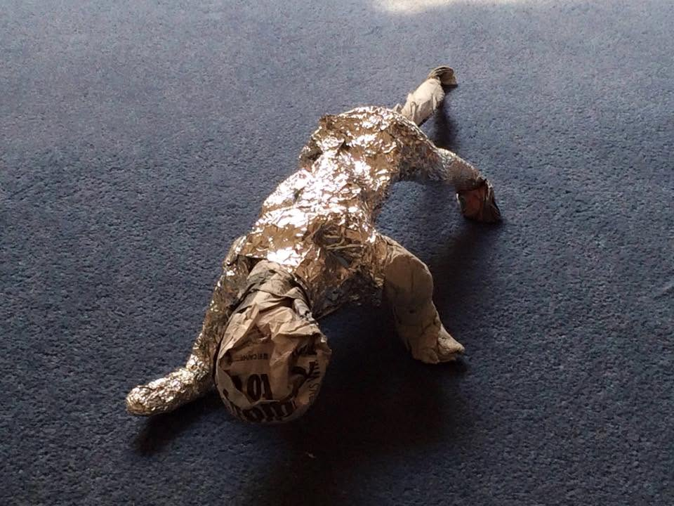
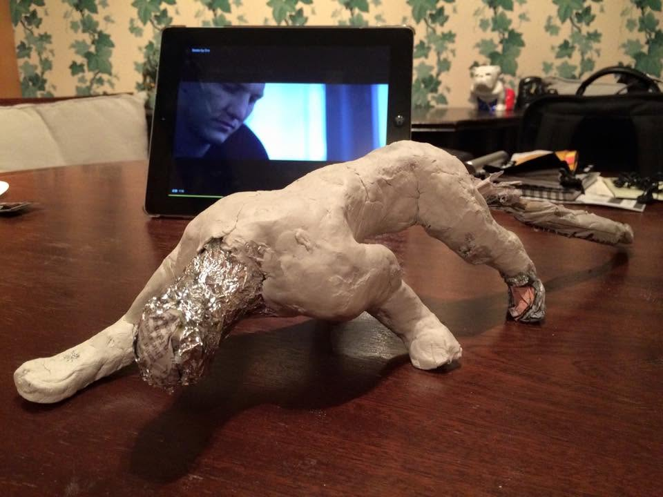
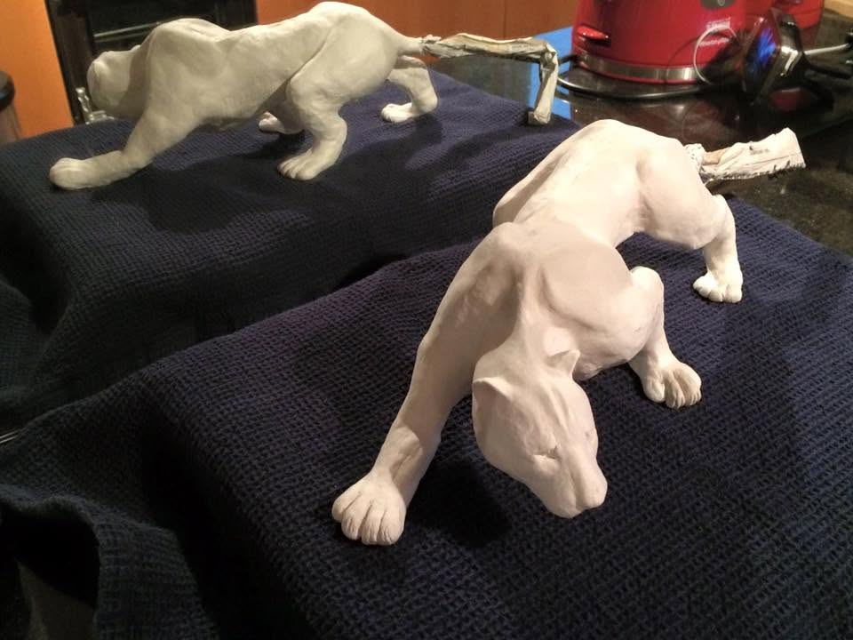
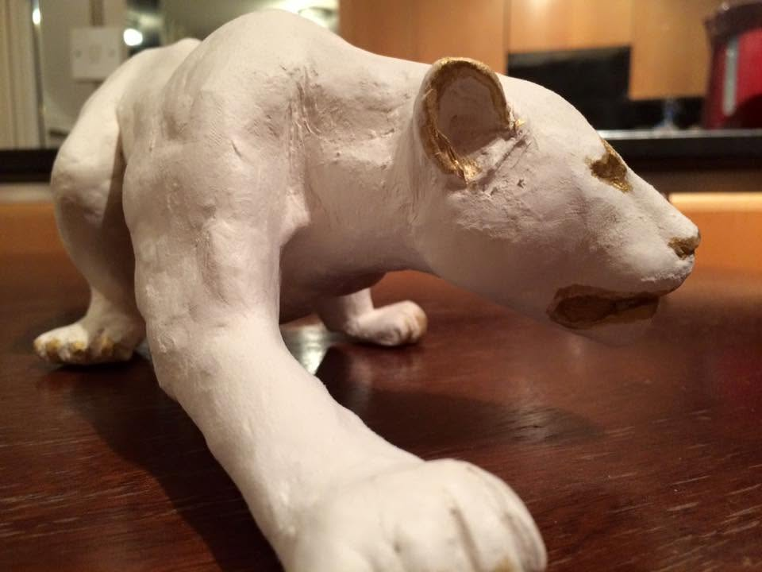
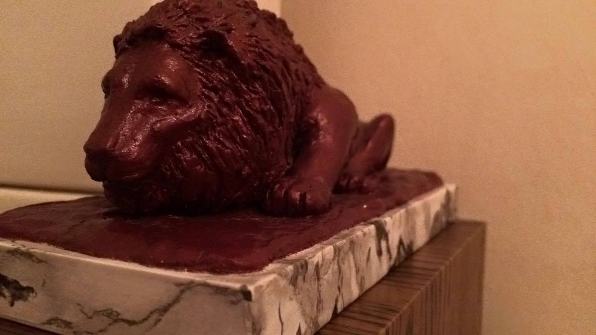
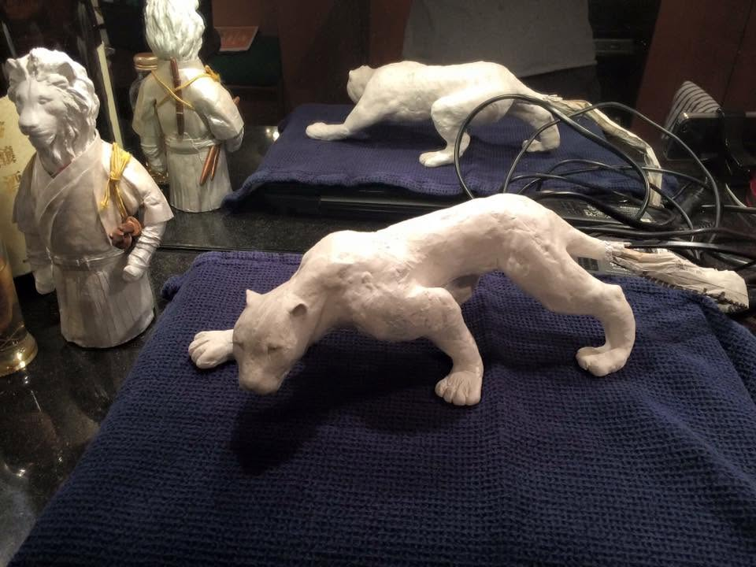
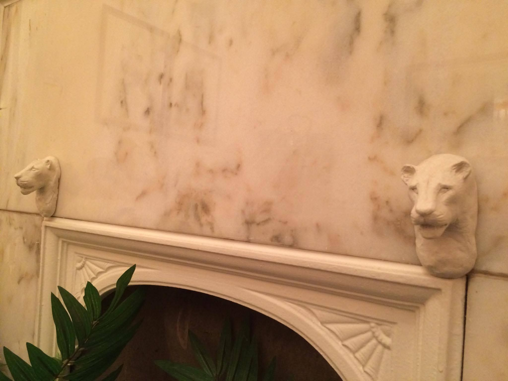
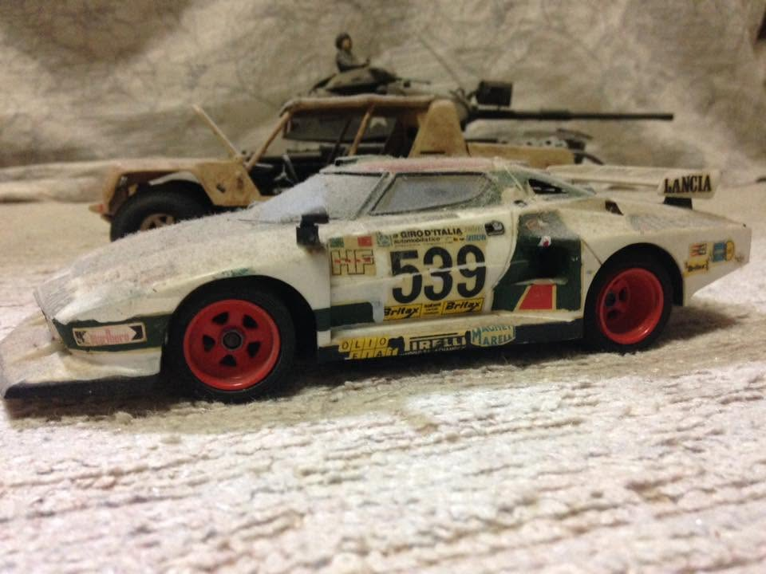

コタロ美術館 ── 彫刻と模型のコレクション

新聞紙とアルミホイルを用いて、ダイナミックな獣のシルエットのベースを作り上げます。

しなやかな筋肉の起伏や、躍動感のあるポージングを粘土で丁寧に彫り出していく段階です。

複数の個体が並び、それぞれの角度からシルエットやバランス入念にチェックします。

白亜のボディに、たてがみや細部へゴールドやブラウンの繊細なグラデーションを施します。

重厚な色合いに仕上げられたライオン像。大理石調の特製ベースが作品を引き立てます。

伝統的な和の佇まいや他のフィギュア作品と共に並ぶ、趣深いミュージアムのディスプレイ。

美しい大理石の暖炉を背景に配置された、気品あふれる猛獣のレリーフ・オブジェ。

細部までリアルなウェザリング（汚し塗装）が施された、こだわりの自動車・ミリタリー模型コレクション。